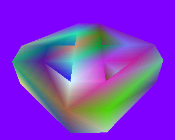
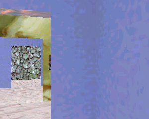
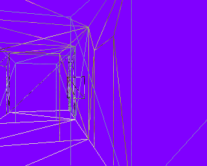
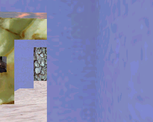
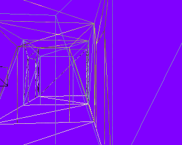

Portals.h
A set of rectangular rooms connected by rectangular hallways, each pair of adjacent rooms sharing a portal. The center room has four pictures, each a rectangle with a texture attached to it. If you position yourself in a hallway outside the center room, move very close to a wall of the hallway, and put the scene in wireframe mode, you will see that the pictures hidden by the wall containing the portal are not visible (wireframes of pictures do not show up). If you then move towards the center of the hallway, you will see the wireframes pop into view. This happens because the bounding spheres of the pictures are now visible through the portal. Because the bounding sphere is not a good fit to the rectangle, the picture will be drawn, even though the actual rectangle geometry is hidden by the the wall of the portal. If you were to switch to using oriented bounding boxes, this premature drawing will not occur (culling is exact in the OBB case).
You can also move the camera to the outside environment. The level actually has an "outside" representation. The portal library supports such a concept.
The zip file contains all of the textures. It also contains diagrams that show how the level is structured, including the vertex numbering and tessellations for each room. A text file describing the structure of the BSP used for representing the level is provided.
The left image below show a view from a hallway into the center room. The right image shows a view of the "outside" of the building.
 |
 |
The left image shows a view from the hallway where Munch's picture is partially visible. The right image shows a wireframe view. Notice that the wireframe of the picture occurs since the picture is not culled.
|  |  |
The left image shows a view from the hallway where Munch's picture and corresponding bounding sphere are both occluded by the wall of the doorway. The right image shows a wireframe view. The portal system has culled out the picture.
|  |  |